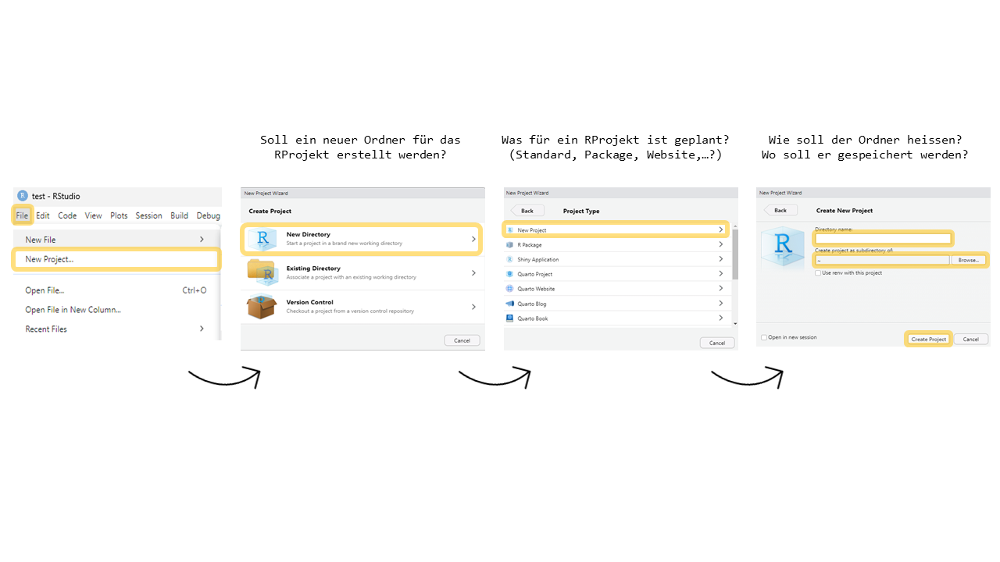
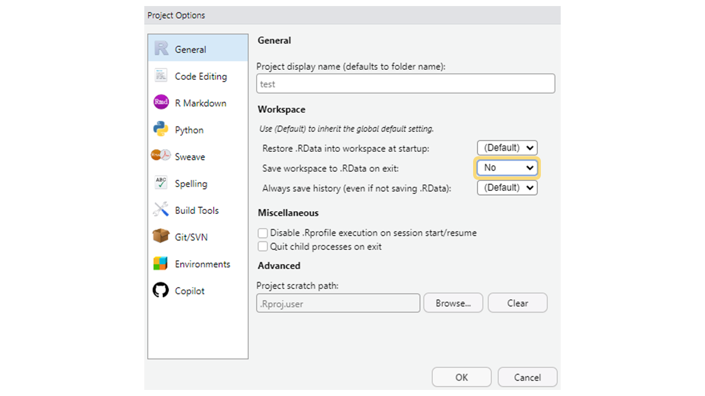
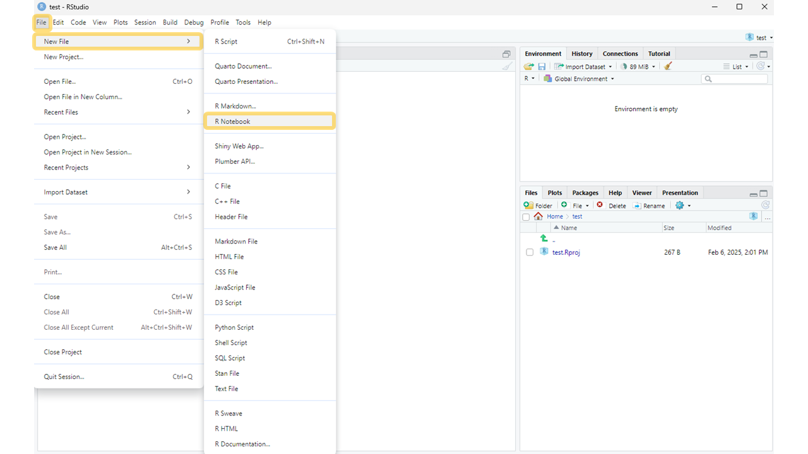
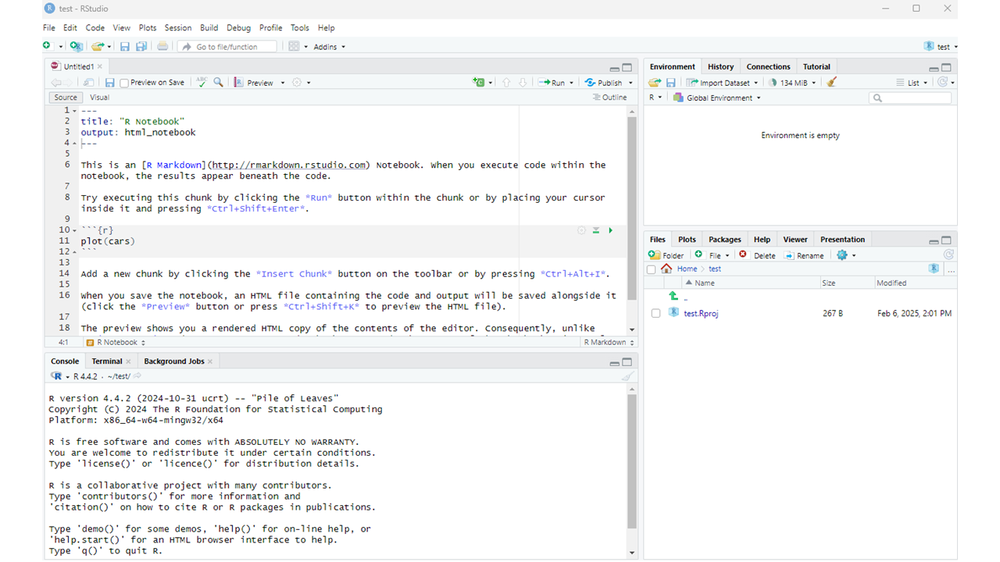

# Einlesen Daten ausserhalb eines Projekts
d_ohne_projekt <- read.csv("C://User/nameName/Ordner/Unterordner/Unterunterordner/data/daten.csv")
# Einlesen Daten aus dem Ordner data innerhalb eines Projekts
d_mit_projekt <- read.csv("data/daten.csv")2 Basics R und RStudio
Inhalt
- Überblick über das Arbeiten mit R in RStudio
- Erstellen und Nutzen von RProjects
- Erstellen und Nutzen von Skripts und Notebooks
2.1 R, RStudio und WebR
R ist eine leistungsstarke Programmiersprache und eine Open-Source-Softwareumgebung. Sie wird in der Forschung für die Datenverarbeitung, statistische Datenanalyse und Datenvisualisierung eingesetzt. R wird von Forschenden und Data Scientists weltweit verwendet, da eine breite Sammlung an Erweiterungen (Packages) zugänglich ist. Dadurch, dass diese Packages kontinuierlich weiterentwickelt und neue Packages erstellt werden, bietet R umfangreiche “state of the art” Funktionen. R kann für einfache Datenanalysen, wie auch für komplexe statistische Modelle und machine learning genutzt werden.
RStudio ist eine integrierte Entwicklungsumgebung (IDE) für die Programmiersprache R, die den Umgang mit R vereinfacht und benutzerfreundlicher gestaltet. In RStudio kann Code geschrieben, ausgeführt und gespeichert werden. RStudio integriert Funktionen wie eine Konsole, ein Skriptfenster, eine Umgebung zur Verwaltung von Variablen und eine Historie der ausgeführten Befehle.
WebR ermöglicht das Verwenden von R mit einem Browser, z.B. auf der Kurswebsite.
Arbeiten in R und RStudio eignet sich ideal für Datenverarbeitung, -analyse und -visualisierung aufgrund folgender Vorteile:
leistungsstarke Funktionen wie {tidyverse} und {ggplot2} für das Einlesen, Bearbeiten, Zusammenfassen und Visualisieren von Datensätzen
Reproduzierbarkeit des Codes und wiederverwendbare sowie nachvollziehbare Analysen ermöglicht durch abspeicherbare und gut kommentierbare Skripte
Flexibilität durch eine grosse Auswahl von R-Packages auf CRAN und die Möglichkeit, eigene Funktionen zu erstellen
Aktualität durch ständige Updates von R und R-Packages mit modernen Analysefunktionen
Zugänglichkeit: kostenlos und Open-Source
Support durch aktive Community mit schneller Hilfe
2.2 Programmierumgebung RStudio
Wenn Sie RStudio öffnen, sehen Sie die Standardansicht. Links finden Sie die Konsole. Sobald Sie ein Code-File öffnen, erscheint dieses links oben.
Skript: In einem Skript können Sie Code schreiben und ausführen. Es können verschiedene Code-Files geöffnet werden, z.B. RSkript und RNotebooks. Wenn Sie einen Datensatz anschauen, erscheint dieser auch in diesem Quadrant.
Konsole: Hier können Sie direkt Code eingeben und ausführen.
Umgebung: Hier finden Sie gespeicherte Objekte (z.B. Variablen).
Arbeitsverzeichnis, Plots, Packages, _Help__, …: Hier finden Sie diverse hilfreiche Informationen wie z.B. die Ordnerstruktur mit der Sie aktuell arbeiten (working directory), die Anzeige von Plots, welche Packages installiert und geladen sind, Hilfe zu den einzelnen Funktionen, u.v.m.
2.3 RProjekte
In RStudio gibt es die Möglichkeit mit RProjekten zu arbeiten. Dies gibt Ihnen die Möglichkeit Ihren Code in Projekte zu strukturieren. Ein Projekt ist eine Einheit, in der Sie Daten und Analysecode bündeln möchten.
RProjekte haben zwei grosse Vorteile, die uns das Arbeiten in RStudio vereinfachen:
1. RProjekte sammeln zusammengehörige Daten und Code in einem Ordner. So behalten Sie den Überblick, wo der Code für dieses Projekt zu finden ist. Sobald Sie an etwas Neuem arbeiten, erstellen Sie einfach ein neues Projekt.
2. RProjekte ermöglichen ein stabiles working directory.
Dort wo das RProjekt abgelegt ist, beginnt R zu suchen, wenn Sie einen Pfad eingeben. Das hat zur Folge, dass innerhalb eines RProjekt-Ordners die Pfade immer gleich bleiben, auch wenn Sie den Ordner an einen anderen Ort oder sogar auch einen anderen Computer verschieben. Ausserdem sind die Pfade oft viel kürzer.
Projekt-Ordner
Überlegen Sie zu Beginn gut, wo Sie Ihre Projekte abspeichern möchten.
Erstellen Sie dort einen RProjects-Ordner.
Speichern Sie alle RProjekte immer in diesem Ordner ab. So behalten Sie den Überblick.
2.3.1 RProjekt erstellen
Unter File > New Project kann ein neues RProjekt erstellt werden.
 Es empfiehlt sich bei RProjekten eine Einstellungsänderung (Tools> Project Options...) vorzunehmen, so dass die aktuell gespeicherten Variablen bei jedem Schliessen vom Projekt gelöscht werden. Dies verhindert, dass der aktuelle Code nur aufgrund früherer Speicherung läuft oder das falsche Variablen verwendet werden.

Hands-on: Erstellen eines RProjekt erstellen
Erstellen Sie ein neues RProjekt auf Ihrem Computer mit folgenden Schritten:
Öffnen Sie RStudio.
Erstellen Sie ein neues RProjekt.
Klicken Sie dafür auf
File>New Project>New Directory>New ProjectBenennen Sie das Project
introduction_to_rund speichern Sie es an einem sinnvollen Ort auf Ihrem Computer.Klicken Sie auf
Create Project.
Passen Sie die Einstellungen unter
Tools>Project Optionsan.Schauen Sie sich im rechten unteren Quadranten unter
Filesdas aktuelleworking directoryan. Was passiert, wenn Sie nun auf Ihrem Computer im Ordnern des RProjekts einen neuen Ordner namensdataerstellen?Wo im Fenster von RStudio finden Sie die Information, ob Sie gerade in einem Projekt arbeiten (und in welchem) oder nicht?
Tipp: Namensgebung für Files und Variablen
Wenn Sie Filenamen auswählen, achten Sie darauf dass diese machine-readable sind:
keine Lücken (verwenden Sie stattdessen den
camelCase, densnake_caseoder-)keine
ä,ö,üoder andere Sonderzeichen verwenden
2.4 Code schreiben und speichern
In RStudio können Sie Code auf verschiedene Arten schreiben, ausführen und speichern.
1. Code in der Konsole
Dies ist die einfachste Art Code zu schreiben und auszuführen. Sie können die Konsole (linker unterer Quadrant) direkt nutzen. Schreiben Sie in die Konsole Code und drücken Sie EnterEnter, um diesen auszuführen. Code in der Konsole kann nicht gespeichert werden, er geht z.B. beim Schliessen von RStudio verloren. Deshalb eignet sich die Konsole vor allem für schnelles und einmaliges Schreiben von Code. Beispiele dafür sind das Herunterladen von Packages, Ausprobieren von Code und kurzen Berechnungen, welche nicht gespeichert werden müssen.
2. Code in RSkripts
Wenn ein RProjekt ein Ordner wäre, wären RSkripts die Blätter. Ein neues RSkript kann unter File > New File > R Script erstellt werden. RSkripts sind simpel: Alles was geschrieben wird, kann als Code ausgeführt werden. Mit einer Ausnahmen: Wenn ein # am Anfang der Zeile steht, gilt die Zeile als auskommentiert und wird nicht ausgeführt.
# Das hier ist auskommentierter Text. Er kann nicht als Code ausgeführt werden.
1+1 # vor dem Hash steht Code, Text hinter dem Hash wird nicht ausgeführt.3. Code in RNotebooks:
Ein RNotebook ist praktisch, wenn man Text und Code kombinieren möchte, aber man Text ohne das Auskommentieren (mit dem #) schreiben möchte. Dies ist beispielsweise der Fall, wenn man Details zu einer Analyse zu den Berechnungen hinzu schreiben möchte. Ein RNotebook kann zudem “gerendert” werden, dass heisst, es kann damit ein .html- oder ein .pdf-File erstellt werden. Das ist besonders praktisch, wenn man seine Analyse mit jemanden teilen möchte, der/die kein R benutzt (z.B. bei einer Publikation kann so der Code mit dem Artikel eingereicht werden). In einem RNotebook ist Text grundsätzlich normaler Text. Code kann eingefügt werden, indem man ein Code-Feld einfügt. Weiter können auch Bilder eingefügt werden und der Text kann mit Kapiteln, fett/kursiv Schrift, etc. strukturiert werden.
2.5 Erstellen und Verwenden von RNotebooks


2.6 Dateiformate
- RProjects:
.Rproj - RSkripts:
.R - RNotebooks:
.Rmd - gerenderte RNotebooks:
.html,.pdf, etc.